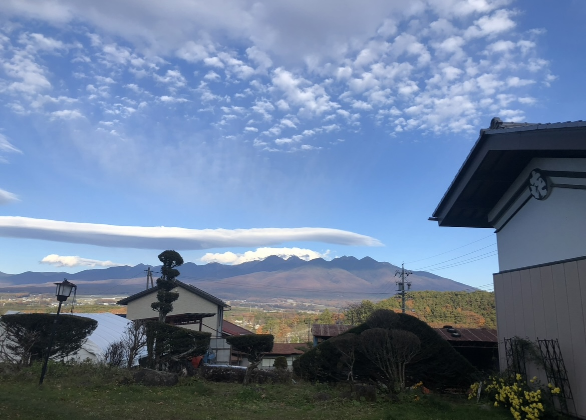
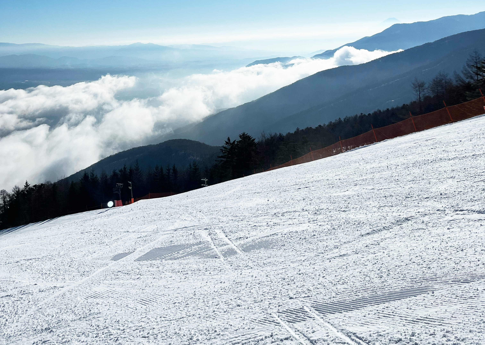

My Favorite Spot
長野県富士見町にある牧場で育った私。
自然豊かな町の、お気に入りスポットを紹介します。
SPOT
-

八ヶ岳
自宅から見える雄大な景色。中学生時代には、学校の授業で登山！朝早く起きると綺麗な日の出が見れる。
-

富士見パノラマリゾート
晴天率85％！東京から90分で着くスキー場。運が良ければ早朝に雲海も見れる！
-
八ヶ岳アルパカ牧場
可愛いアルパカと触れ合える。疾走するアルパカを応援する「アルパカダービー」も開催！
ACCESS
〒399-0211長野県諏訪郡富士見町富士見4654-796
BLOG
-
我が家の牛
牛舎に入ると、餌の時間かと一斉にこちらを見る牛たち。
今日も頑張って乳を出してくれています。… -
地元でスノボ
家族と一緒にパノラマスキー場に行きました。
今日も天気が良くて気持ちよかったし、富士山も見えます！…